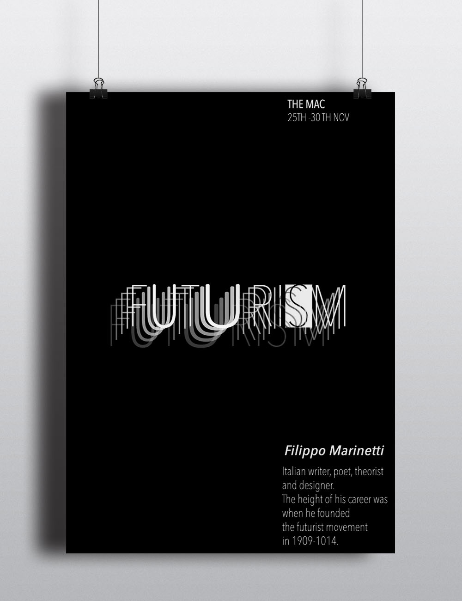

The Brief

To create a Design History Poster based on The Influence of Modern Art. I chose to focus on Futurism. This movement started with the Italian poet Filippo Tommaso Marinetti. Artists used the movement and their art to express their views on the war, as Futurism was mainly focused on advanced technology/machinery, violence, speed and change.
Process
-

- 